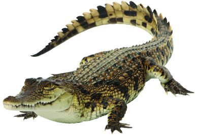

Top 5 most dangerous animals
5. Lions
It kills 200 humans per year
Facts about lions
Characteristics
- They have strong, compact bodies
- They have powerful forelegs
- They have teeth and jaws for pulling down and killing prey
- The adult males have shaggy manes that range in color from blond to reddish-brown to black
4. Crocodiles

It kills 1,000 humans per year
Facts about crocodiles
Characteristics
- They are large, prehistoric-looking reptiles
- They are found throughout the world's hottest tropical regions
- They have broad bodies
- They have short legs
- They have long, muscular tails
3. Scorpions
It kills 3,300 humans per year
Facts about scorpions
Characteristics
- They are arthropods
- They have eight legs
- They have two pedipalps
- They have a tail with a venom-injecting barb
2. Snakes
It kills 138,000 humans per year
Facts about Snakes
Characteristics
- They have no limbs, voice, external ears, or eyelids.
- They have only one functional lung, and a long, slender body.
- Their skin is covered with scales.
- They have good eyesight.
- They continually taste the surrounding air with their tongues.
- They are capable of hissing.
1. Mosquitoes
It kills 725,000 per year
Facts about Mosquitoes
Characteristics
- They have two pairs of wings, but their second pair of wings are reduced to short, peg-like structures called halteres.
- They have thin, long bodies and three pairs of extremely long legs.
- They have scales along the veins of their wings and long beak-like, sharp sucking mouth parts called a proboscis.
- They also have feathery or hairy antennae.